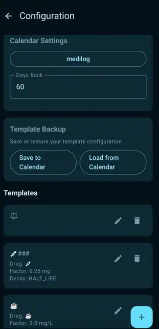
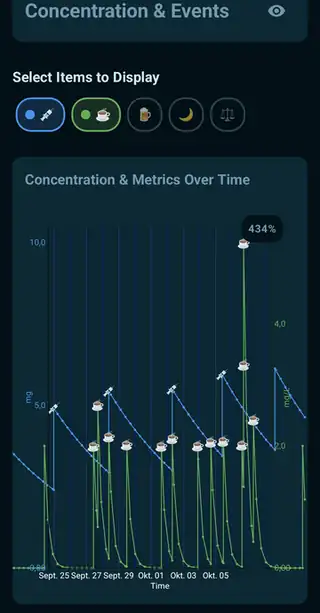

Medical Calendar Log
صحة ورياضة
A powerful Android application for tracking medical events, medications, and health metrics using your device's built-in calendar system. No additional accounts or cloud services required. 🚀 Key Features Quick Event Logging Log common medical events with a single tap using customizable template butt
✓ ترخيص مفتوح (GPL-3.0-or-later) · آخر تحديث: 2026-11-13
2.0.9الإصدار
2.2 MBالحجم
GPL-3.0-or-laterالرخصة
Open in Kanzتحميل APK (2.2 MB)
Download APK
SHA-256: ed025ddbaf3b2e9b1eef6a21551376d8fadb8fdc12fd4097527d84395e41d2c5


امسح الكود لفتح صفحة التطبيق
Scan to open this app page
لو كنز مش متثبت عندك: نزّل متجر كنز.
Not installed? Get the Kanz store.